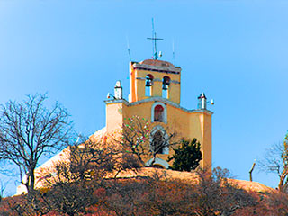
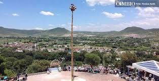
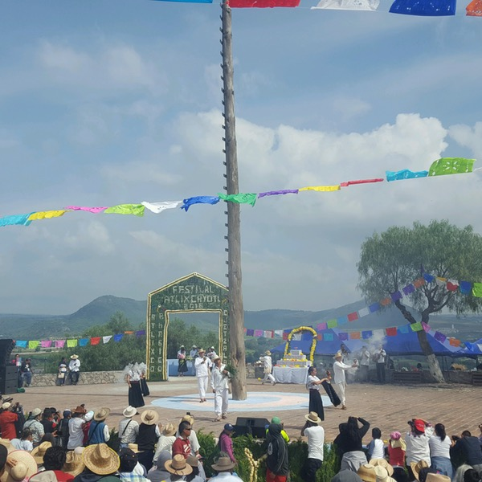

Una de tantas historias que hay dentro de este lugar, simbolo de esta ciudad de Atlixco.
Una de las tradiciones de ATLIXCO es el visitar el dia de san Miguel ,la capilla del cerro que lleva su nombre, disfrutar la fiesta en que dicha fecha se celebra en este lugar goza de la romeria y antojitos que se expenden, y uno que otro año regresar a casa chorreando por el aguacero que normalmente se presenta. Algo que las nuevas generaciones ya no encuentra al visitar la capilla de SAN MIGUEL, es la antigua figura del DIABLO, figura de madera como de 45 centimetros que se encontraba amarrado bajo la figura del principe,como nos lo relata Don Juan Morelos.

Atlixco es uno de los municipios más bellos que tiene Puebla y además de contar con el mejor clima, también es un Pueblo Mágico. En este lugar se ubica el Cerro de San Miguel donde no se puede dejar de visitar la Capilla de San Miguel.
El origen de esta capilla como espacio consagrado a la devoción de San Miguel Arcángel, se remonta al siglo XVI. Como se ve el emplazamiento, inició con una ermita dependiente del convento, que evolucionó y se ha conservado a través de los años; al principio su uso fue esporádico, pues al parecer la congregación sólo hacía ceremonias en el día de fiesta.

El festejo del Huey Atlixcayotl
Es un festival que se creó en el año de 1965, en donde se entonan diferentes cantos, danzas y rituales vernáculos, principalmente por los indígenas, incluyendo a los mestizos.
Este festival se realiza en la plazuela de la danza (Netotiloyan), que está ubicado en el Cerro de San Miguel donde se siente la algarabía de los atlixquenses.
El festejo implica todo un día de danza y para ello se realiza todo un año de preparativos.
Participan bailes de los nahuas, otomíes, totonacas, popolocas y mixtecas de los valles centrales, la Mixteca poblana, la región costera, los volcanes, la tierra caliente, la sierra de Tehuacán, la huasteca, los llanos y la sierra norte, todos ellos en su conjunto forman las once regiones del estado.
Dichos bailes tienen el único objetivo de deleitar a los dioses y de paso a los hombres. El honor a los dioses es para ser recreados y para recibir las súplicas de que su benevolencia siga conservando al mundo.
Su ubicación es en el Cerro de San Miguel.
Cada 29 de septiembre la Capilla de San Miguel recibe a cientos de fieles que acuden en romería con motivo de la fiesta del Arcángel San Miguel. Esta celebración en ocasiones coincide con la festividad del Huey Atlixcayotl que se realiza el último domingo de septiembre lo que hace más grande la fiesta, aunque son dos celebraciones totalmente distintas.

También conocido como Popocatica (cerro que humea) o Macuilxochitpec (cerro de las cinco flores), es el lugar en donde se realiza la fiesta máxima de Atlixco que se lleva a cabo el último domingo de septiembre y para la que se reúnen los representantes de las once regiones culturales de Puebla. Pero aunque tu visita no coincida con la fecha, el lugar te ofrece una maravillosa vista panorámica y siempre puedes visitar la Capilla de San Miguel.
Circunvalación Quetzalcóatl s/n, Atlixco




 1
1 9
9